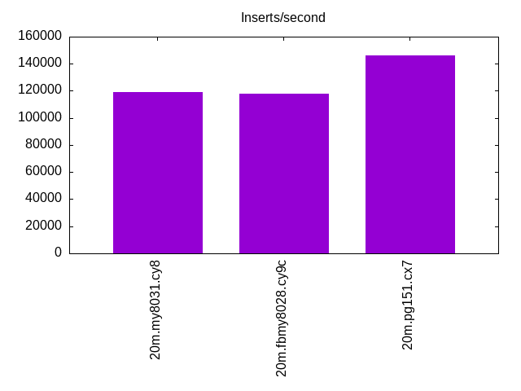
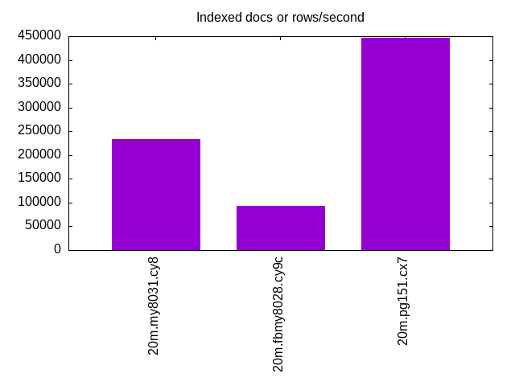
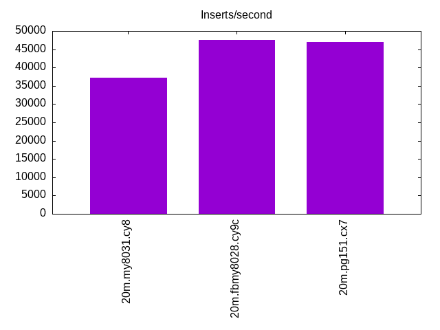
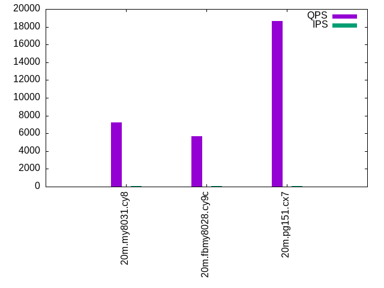
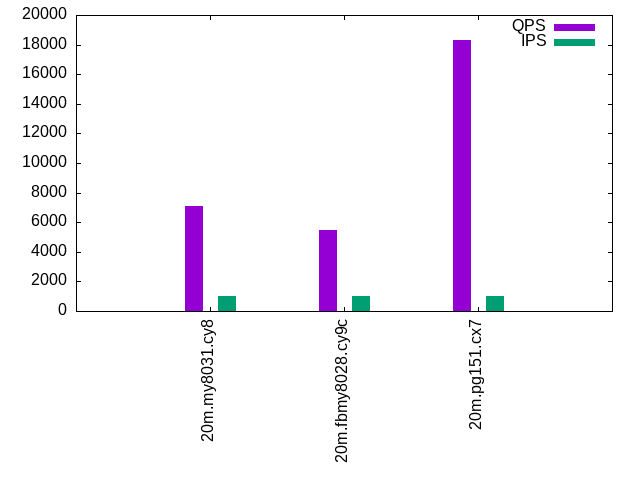

Introduction
This is a report for the insert benchmark with 20M docs and 1 client(s). It is generated by scripts (bash, awk, sed) and Tufte might not be impressed. An overview of the insert benchmark is here and a short update is here. Below, by DBMS, I mean DBMS+version.config. An example is my8020.c10b40 where my means MySQL, 8020 is version 8.0.20 and c10b40 is the name for the configuration file.
The test server is an c7g.2xl with 8 cores, 16G RAM and io2 storage (256G, 10K IOPs). The benchmark was run with 1 clients and there was 1 or 2 connections per client (1 for queries, 1 for inserts). The benchmark loads 20M rows without secondary indexes, creates secondary indexes, loads another 20M rows then does 3 read+write tests for one hour each that do queries as fast as possible with 100, 500 and then 1000 writes/second/client concurrent with the queries. The database is cached by the storage engine and the only IO is for writes. Clients and the DBMS share one server. The per-database configs are in the per-database subdirectories here.
The tested DBMS are:
- my8031.cy8 - MySQL 8.0.31 with InnoDB and the cy8 config
- fbmy8028.cy9c - FB MySQL 8.0.28 with MyRocks and the cy9c config
- pg151.cx7 - Postgres 15.1 and the cx7 config
Contents
- Summary
- l.i0: load without secondary indexes
- l.x: create secondary indexes
- l.i1: continue load after secondary indexes created
- q100.1: range queries with 100 insert/s per client
- q500.1: range queries with 500 insert/s per client
- q1000.1: range queries with 1000 insert/s per client
Summary
The numbers are inserts/s for l.i0 and l.i1, indexed docs (or rows) /s for l.x and queries/s for q*.2. The values are the average rate over the entire test for inserts (IPS) and queries (QPS). The range of values for IPS and QPS is split into 3 parts: bottom 25%, middle 50%, top 25%. Values in the bottom 25% have a red background, values in the top 25% have a green background and values in the middle have no color. A gray background is used for values that can be ignored because the DBMS did not sustain the target insert rate. Red backgrounds are not used when the minimum value is within 80% of the max value.
| dbms | l.i0 | l.x | l.i1 | q100.1 | q500.1 | q1000.1 |
|---|---|---|---|---|---|---|
| 20m.my8031.cy8 | 119048 | 233721 | 37244 | 7243 | 7188 | 7085 |
| 20m.fbmy8028.cy9c | 117647 | 93056 | 47619 | 5699 | 5486 | 5465 |
| 20m.pg151.cx7 | 145985 | 446667 | 46948 | 18682 | 18456 | 18311 |
This lists the average rate of inserts/s for the tests that do inserts concurrent with queries. For such tests the query rate is listed in the table above. The read+write tests are setup so that the insert rate should match the target rate every second. Cells that are not at least 95% of the target have a red background to indicate a failure to satisfy the target.
| dbms | q100.1 | q500.1 | q1000.1 |
|---|---|---|---|
| my8031.cy8 | 100 | 499 | 999 |
| fbmy8028.cy9c | 100 | 500 | 999 |
| pg151.cx7 | 100 | 500 | 999 |
| target | 100 | 500 | 1000 |
l.i0
l.i0: load without secondary indexes. Graphs for performance per 1-second interval are here.
Average throughput:
Insert response time histogram: each cell has the percentage of responses that take <= the time in the header and max is the max response time in seconds. For the max column values in the top 25% of the range have a red background and in the bottom 25% of the range have a green background. The red background is not used when the min value is within 80% of the max value.
| dbms | 256us | 1ms | 4ms | 16ms | 64ms | 256ms | 1s | 4s | 16s | gt | max |
|---|---|---|---|---|---|---|---|---|---|---|---|
| my8031.cy8 | 99.722 | 0.102 | 0.172 | 0.003 | 0.046 | ||||||
| fbmy8028.cy9c | 99.826 | 0.170 | 0.004 | 0.047 | |||||||
| pg151.cx7 | 99.996 | 0.004 | 0.003 |
Performance metrics for the DBMS listed above. Some are normalized by throughput, others are not. Legend for results is here.
ips qps rps rmbps wps wmbps rpq rkbpq wpi wkbpi csps cpups cspq cpupq dbgb1 dbgb2 rss maxop p50 p99 tag 119048 0 0 0.0 623.0 41.2 0.000 0.000 0.005 0.355 14160 18.4 0.119 6 1.3 3.8 2.5 0.046 119670 112978 20m.my8031.cy8 117647 0 0 0.0 113.6 23.2 0.000 0.000 0.001 0.202 12891 20.1 0.110 7 0.7 1.9 0.6 0.047 119372 106886 20m.fbmy8028.cy9c 145985 0 0 0.0 269.5 61.9 0.000 0.000 0.002 0.434 18552 20.3 0.127 6 1.9 5.2 0.0 0.003 146748 41555 20m.pg151.cx7
l.x
l.x: create secondary indexes.
Average throughput:
Performance metrics for the DBMS listed above. Some are normalized by throughput, others are not. Legend for results is here.
ips qps rps rmbps wps wmbps rpq rkbpq wpi wkbpi csps cpups cspq cpupq dbgb1 dbgb2 rss maxop p50 p99 tag 233721 0 1215 81.5 4779.3 246.5 0.005 0.357 0.020 1.080 20322 23.1 0.087 4 3.0 5.4 3.9 0.006 NA NA 20m.my8031.cy8 93056 0 0 0.0 62.7 14.2 0.000 0.000 0.001 0.156 753 12.4 0.008 5 1.4 2.7 1.7 0.002 NA NA 20m.fbmy8028.cy9c 446667 0 0 0.0 426.6 104.1 0.000 0.000 0.001 0.239 4311 12.2 0.010 1 3.7 8.6 0.0 0.003 NA NA 20m.pg151.cx7
l.i1
l.i1: continue load after secondary indexes created. Graphs for performance per 1-second interval are here.
Average throughput:
Insert response time histogram: each cell has the percentage of responses that take <= the time in the header and max is the max response time in seconds. For the max column values in the top 25% of the range have a red background and in the bottom 25% of the range have a green background. The red background is not used when the min value is within 80% of the max value.
| dbms | 256us | 1ms | 4ms | 16ms | 64ms | 256ms | 1s | 4s | 16s | gt | max |
|---|---|---|---|---|---|---|---|---|---|---|---|
| my8031.cy8 | 99.509 | 0.357 | 0.097 | 0.036 | 0.123 | ||||||
| fbmy8028.cy9c | 30.409 | 69.588 | 0.001 | 0.002 | 0.025 | ||||||
| pg151.cx7 | 22.347 | 77.652 | 0.001 | 0.008 |
Performance metrics for the DBMS listed above. Some are normalized by throughput, others are not. Legend for results is here.
ips qps rps rmbps wps wmbps rpq rkbpq wpi wkbpi csps cpups cspq cpupq dbgb1 dbgb2 rss maxop p50 p99 tag 37244 0 172 2.7 2645.6 88.7 0.005 0.074 0.071 2.440 17263 14.5 0.464 16 7.9 10.3 8.3 0.123 40007 549 20m.my8031.cy8 47619 0 14 1.8 232.8 52.7 0.000 0.038 0.005 1.133 11654 26.2 0.245 22 3.0 4.9 2.4 0.025 47250 42904 20m.fbmy8028.cy9c 46948 0 0 0.0 361.9 81.6 0.000 0.000 0.008 1.781 13658 15.5 0.291 13 8.2 23.0 0.0 0.008 47099 37011 20m.pg151.cx7
q100.1
q100.1: range queries with 100 insert/s per client. Graphs for performance per 1-second interval are here.
Average throughput:
Query response time histogram: each cell has the percentage of responses that take <= the time in the header and max is the max response time in seconds. For max values in the top 25% of the range have a red background and in the bottom 25% of the range have a green background. The red background is not used when the min value is within 80% of the max value.
| dbms | 256us | 1ms | 4ms | 16ms | 64ms | 256ms | 1s | 4s | 16s | gt | max |
|---|---|---|---|---|---|---|---|---|---|---|---|
| my8031.cy8 | 99.999 | 0.001 | nonzero | nonzero | 0.005 | ||||||
| fbmy8028.cy9c | 99.996 | 0.004 | nonzero | 0.003 | |||||||
| pg151.cx7 | 100.000 | nonzero | nonzero | 0.003 |
Insert response time histogram: each cell has the percentage of responses that take <= the time in the header and max is the max response time in seconds. For max values in the top 25% of the range have a red background and in the bottom 25% of the range have a green background. The red background is not used when the min value is within 80% of the max value.
| dbms | 256us | 1ms | 4ms | 16ms | 64ms | 256ms | 1s | 4s | 16s | gt | max |
|---|---|---|---|---|---|---|---|---|---|---|---|
| my8031.cy8 | 99.319 | 0.681 | 0.007 | ||||||||
| fbmy8028.cy9c | 1.514 | 98.486 | 0.002 | ||||||||
| pg151.cx7 | 99.708 | 0.292 | 0.016 |
Performance metrics for the DBMS listed above. Some are normalized by throughput, others are not. Legend for results is here.
ips qps rps rmbps wps wmbps rpq rkbpq wpi wkbpi csps cpups cspq cpupq dbgb1 dbgb2 rss maxop p50 p99 tag 100 7243 0 0.0 124.3 3.0 0.000 0.000 1.246 31.065 28460 13.1 3.929 72 8.0 10.5 8.5 0.005 7256 6985 20m.my8031.cy8 100 5699 0 0.0 3.7 0.2 0.000 0.000 0.037 1.713 22028 13.1 3.866 92 2.8 4.8 4.1 0.003 5690 5274 20m.fbmy8028.cy9c 100 18682 0 0.0 188.9 4.5 0.000 0.000 1.893 45.897 71550 12.2 3.830 26 8.2 17.7 0.0 0.003 18716 18236 20m.pg151.cx7
q500.1
q500.1: range queries with 500 insert/s per client. Graphs for performance per 1-second interval are here.
Average throughput:

Query response time histogram: each cell has the percentage of responses that take <= the time in the header and max is the max response time in seconds. For max values in the top 25% of the range have a red background and in the bottom 25% of the range have a green background. The red background is not used when the min value is within 80% of the max value.
| dbms | 256us | 1ms | 4ms | 16ms | 64ms | 256ms | 1s | 4s | 16s | gt | max |
|---|---|---|---|---|---|---|---|---|---|---|---|
| my8031.cy8 | 99.998 | 0.002 | nonzero | nonzero | 0.005 | ||||||
| fbmy8028.cy9c | 99.994 | 0.006 | nonzero | 0.003 | |||||||
| pg151.cx7 | 100.000 | nonzero | nonzero | 0.003 |
Insert response time histogram: each cell has the percentage of responses that take <= the time in the header and max is the max response time in seconds. For max values in the top 25% of the range have a red background and in the bottom 25% of the range have a green background. The red background is not used when the min value is within 80% of the max value.
| dbms | 256us | 1ms | 4ms | 16ms | 64ms | 256ms | 1s | 4s | 16s | gt | max |
|---|---|---|---|---|---|---|---|---|---|---|---|
| my8031.cy8 | 99.542 | 0.458 | 0.007 | ||||||||
| fbmy8028.cy9c | 5.872 | 94.125 | 0.003 | 0.004 | |||||||
| pg151.cx7 | 99.931 | 0.067 | 0.003 | 0.016 |
Performance metrics for the DBMS listed above. Some are normalized by throughput, others are not. Legend for results is here.
ips qps rps rmbps wps wmbps rpq rkbpq wpi wkbpi csps cpups cspq cpupq dbgb1 dbgb2 rss maxop p50 p99 tag 499 7188 0 0.0 234.9 6.1 0.000 0.000 0.470 12.561 28681 13.3 3.990 74 8.7 11.1 9.1 0.005 7208 6924 20m.my8031.cy8 500 5486 0 0.0 4.7 0.4 0.000 0.000 0.009 0.862 21293 13.0 3.881 95 3.0 3.2 4.7 0.003 5498 5035 20m.fbmy8028.cy9c 500 18456 0 0.0 343.4 11.7 0.000 0.000 0.687 23.928 70913 12.6 3.842 27 8.7 13.1 0.0 0.003 18476 18029 20m.pg151.cx7
q1000.1
q1000.1: range queries with 1000 insert/s per client. Graphs for performance per 1-second interval are here.
Average throughput:
Query response time histogram: each cell has the percentage of responses that take <= the time in the header and max is the max response time in seconds. For max values in the top 25% of the range have a red background and in the bottom 25% of the range have a green background. The red background is not used when the min value is within 80% of the max value.
| dbms | 256us | 1ms | 4ms | 16ms | 64ms | 256ms | 1s | 4s | 16s | gt | max |
|---|---|---|---|---|---|---|---|---|---|---|---|
| my8031.cy8 | 99.998 | 0.002 | nonzero | nonzero | 0.005 | ||||||
| fbmy8028.cy9c | 99.993 | 0.007 | nonzero | 0.004 | |||||||
| pg151.cx7 | 100.000 | nonzero | nonzero | nonzero | 0.005 |
Insert response time histogram: each cell has the percentage of responses that take <= the time in the header and max is the max response time in seconds. For max values in the top 25% of the range have a red background and in the bottom 25% of the range have a green background. The red background is not used when the min value is within 80% of the max value.
| dbms | 256us | 1ms | 4ms | 16ms | 64ms | 256ms | 1s | 4s | 16s | gt | max |
|---|---|---|---|---|---|---|---|---|---|---|---|
| my8031.cy8 | 99.847 | 0.153 | 0.008 | ||||||||
| fbmy8028.cy9c | 12.639 | 87.356 | 0.006 | 0.006 | |||||||
| pg151.cx7 | 99.954 | 0.043 | 0.003 | 0.040 |
Performance metrics for the DBMS listed above. Some are normalized by throughput, others are not. Legend for results is here.
ips qps rps rmbps wps wmbps rpq rkbpq wpi wkbpi csps cpups cspq cpupq dbgb1 dbgb2 rss maxop p50 p99 tag 999 7085 0 0.0 373.3 9.6 0.000 0.000 0.374 9.888 28858 13.2 4.073 75 9.1 11.6 9.5 0.005 7096 6841 20m.my8031.cy8 999 5465 1 0.1 8.0 1.2 0.000 0.016 0.008 1.246 21340 13.4 3.905 98 3.3 3.9 6.9 0.004 5482 5003 20m.fbmy8028.cy9c 999 18311 7 0.1 424.4 17.4 0.000 0.003 0.425 17.811 70619 13.0 3.857 28 10.6 15.4 0.0 0.005 18364 17501 20m.pg151.cx7
l.i0
l.i0: load without secondary indexes
Performance metrics for all DBMS, not just the ones listed above. Some are normalized by throughput, others are not. Legend for results is here.
ips qps rps rmbps wps wmbps rpq rkbpq wpi wkbpi csps cpups cspq cpupq dbgb1 dbgb2 rss maxop p50 p99 tag 119048 0 0 0.0 623.0 41.2 0.000 0.000 0.005 0.355 14160 18.4 0.119 6 1.3 3.8 2.5 0.046 119670 112978 20m.my8031.cy8 117647 0 0 0.0 113.6 23.2 0.000 0.000 0.001 0.202 12891 20.1 0.110 7 0.7 1.9 0.6 0.047 119372 106886 20m.fbmy8028.cy9c 145985 0 0 0.0 269.5 61.9 0.000 0.000 0.002 0.434 18552 20.3 0.127 6 1.9 5.2 0.0 0.003 146748 41555 20m.pg151.cx7
l.x
l.x: create secondary indexes
Performance metrics for all DBMS, not just the ones listed above. Some are normalized by throughput, others are not. Legend for results is here.
ips qps rps rmbps wps wmbps rpq rkbpq wpi wkbpi csps cpups cspq cpupq dbgb1 dbgb2 rss maxop p50 p99 tag 233721 0 1215 81.5 4779.3 246.5 0.005 0.357 0.020 1.080 20322 23.1 0.087 4 3.0 5.4 3.9 0.006 NA NA 20m.my8031.cy8 93056 0 0 0.0 62.7 14.2 0.000 0.000 0.001 0.156 753 12.4 0.008 5 1.4 2.7 1.7 0.002 NA NA 20m.fbmy8028.cy9c 446667 0 0 0.0 426.6 104.1 0.000 0.000 0.001 0.239 4311 12.2 0.010 1 3.7 8.6 0.0 0.003 NA NA 20m.pg151.cx7
l.i1
l.i1: continue load after secondary indexes created
Performance metrics for all DBMS, not just the ones listed above. Some are normalized by throughput, others are not. Legend for results is here.
ips qps rps rmbps wps wmbps rpq rkbpq wpi wkbpi csps cpups cspq cpupq dbgb1 dbgb2 rss maxop p50 p99 tag 37244 0 172 2.7 2645.6 88.7 0.005 0.074 0.071 2.440 17263 14.5 0.464 16 7.9 10.3 8.3 0.123 40007 549 20m.my8031.cy8 47619 0 14 1.8 232.8 52.7 0.000 0.038 0.005 1.133 11654 26.2 0.245 22 3.0 4.9 2.4 0.025 47250 42904 20m.fbmy8028.cy9c 46948 0 0 0.0 361.9 81.6 0.000 0.000 0.008 1.781 13658 15.5 0.291 13 8.2 23.0 0.0 0.008 47099 37011 20m.pg151.cx7
q100.1
q100.1: range queries with 100 insert/s per client
Performance metrics for all DBMS, not just the ones listed above. Some are normalized by throughput, others are not. Legend for results is here.
ips qps rps rmbps wps wmbps rpq rkbpq wpi wkbpi csps cpups cspq cpupq dbgb1 dbgb2 rss maxop p50 p99 tag 100 7243 0 0.0 124.3 3.0 0.000 0.000 1.246 31.065 28460 13.1 3.929 72 8.0 10.5 8.5 0.005 7256 6985 20m.my8031.cy8 100 5699 0 0.0 3.7 0.2 0.000 0.000 0.037 1.713 22028 13.1 3.866 92 2.8 4.8 4.1 0.003 5690 5274 20m.fbmy8028.cy9c 100 18682 0 0.0 188.9 4.5 0.000 0.000 1.893 45.897 71550 12.2 3.830 26 8.2 17.7 0.0 0.003 18716 18236 20m.pg151.cx7
q500.1
q500.1: range queries with 500 insert/s per client
Performance metrics for all DBMS, not just the ones listed above. Some are normalized by throughput, others are not. Legend for results is here.
ips qps rps rmbps wps wmbps rpq rkbpq wpi wkbpi csps cpups cspq cpupq dbgb1 dbgb2 rss maxop p50 p99 tag 499 7188 0 0.0 234.9 6.1 0.000 0.000 0.470 12.561 28681 13.3 3.990 74 8.7 11.1 9.1 0.005 7208 6924 20m.my8031.cy8 500 5486 0 0.0 4.7 0.4 0.000 0.000 0.009 0.862 21293 13.0 3.881 95 3.0 3.2 4.7 0.003 5498 5035 20m.fbmy8028.cy9c 500 18456 0 0.0 343.4 11.7 0.000 0.000 0.687 23.928 70913 12.6 3.842 27 8.7 13.1 0.0 0.003 18476 18029 20m.pg151.cx7
q1000.1
q1000.1: range queries with 1000 insert/s per client
Performance metrics for all DBMS, not just the ones listed above. Some are normalized by throughput, others are not. Legend for results is here.
ips qps rps rmbps wps wmbps rpq rkbpq wpi wkbpi csps cpups cspq cpupq dbgb1 dbgb2 rss maxop p50 p99 tag 999 7085 0 0.0 373.3 9.6 0.000 0.000 0.374 9.888 28858 13.2 4.073 75 9.1 11.6 9.5 0.005 7096 6841 20m.my8031.cy8 999 5465 1 0.1 8.0 1.2 0.000 0.016 0.008 1.246 21340 13.4 3.905 98 3.3 3.9 6.9 0.004 5482 5003 20m.fbmy8028.cy9c 999 18311 7 0.1 424.4 17.4 0.000 0.003 0.425 17.811 70619 13.0 3.857 28 10.6 15.4 0.0 0.005 18364 17501 20m.pg151.cx7
l.i0
- l.i0: load without secondary indexes
- Legend for results is here.
- Each entry lists the percentage of responses that fit in that bucket (slower than max time for previous bucket, faster than min time for next bucket).
Insert response time histogram
256us 1ms 4ms 16ms 64ms 256ms 1s 4s 16s gt max tag 0.000 99.722 0.102 0.172 0.003 0.000 0.000 0.000 0.000 0.000 0.046 my8031.cy8 0.000 99.826 0.170 0.000 0.004 0.000 0.000 0.000 0.000 0.000 0.047 fbmy8028.cy9c 0.000 99.996 0.004 0.000 0.000 0.000 0.000 0.000 0.000 0.000 0.003 pg151.cx7
l.x
- l.x: create secondary indexes
- Legend for results is here.
- Each entry lists the percentage of responses that fit in that bucket (slower than max time for previous bucket, faster than min time for next bucket).
TODO - determine whether there is data for create index response time
l.i1
- l.i1: continue load after secondary indexes created
- Legend for results is here.
- Each entry lists the percentage of responses that fit in that bucket (slower than max time for previous bucket, faster than min time for next bucket).
Insert response time histogram
256us 1ms 4ms 16ms 64ms 256ms 1s 4s 16s gt max tag 0.000 0.000 99.509 0.357 0.097 0.036 0.000 0.000 0.000 0.000 0.123 my8031.cy8 0.000 30.409 69.588 0.001 0.002 0.000 0.000 0.000 0.000 0.000 0.025 fbmy8028.cy9c 0.000 22.347 77.652 0.001 0.000 0.000 0.000 0.000 0.000 0.000 0.008 pg151.cx7
q100.1
- q100.1: range queries with 100 insert/s per client
- Legend for results is here.
- Each entry lists the percentage of responses that fit in that bucket (slower than max time for previous bucket, faster than min time for next bucket).
Query response time histogram
256us 1ms 4ms 16ms 64ms 256ms 1s 4s 16s gt max tag 99.999 0.001 nonzero nonzero 0.000 0.000 0.000 0.000 0.000 0.000 0.005 my8031.cy8 99.996 0.004 nonzero 0.000 0.000 0.000 0.000 0.000 0.000 0.000 0.003 fbmy8028.cy9c 100.000 nonzero nonzero 0.000 0.000 0.000 0.000 0.000 0.000 0.000 0.003 pg151.cx7
Insert response time histogram
256us 1ms 4ms 16ms 64ms 256ms 1s 4s 16s gt max tag 0.000 0.000 99.319 0.681 0.000 0.000 0.000 0.000 0.000 0.000 0.007 my8031.cy8 0.000 1.514 98.486 0.000 0.000 0.000 0.000 0.000 0.000 0.000 0.002 fbmy8028.cy9c 0.000 0.000 99.708 0.292 0.000 0.000 0.000 0.000 0.000 0.000 0.016 pg151.cx7
q500.1
- q500.1: range queries with 500 insert/s per client
- Legend for results is here.
- Each entry lists the percentage of responses that fit in that bucket (slower than max time for previous bucket, faster than min time for next bucket).
Query response time histogram
256us 1ms 4ms 16ms 64ms 256ms 1s 4s 16s gt max tag 99.998 0.002 nonzero nonzero 0.000 0.000 0.000 0.000 0.000 0.000 0.005 my8031.cy8 99.994 0.006 nonzero 0.000 0.000 0.000 0.000 0.000 0.000 0.000 0.003 fbmy8028.cy9c 100.000 nonzero nonzero 0.000 0.000 0.000 0.000 0.000 0.000 0.000 0.003 pg151.cx7
Insert response time histogram
256us 1ms 4ms 16ms 64ms 256ms 1s 4s 16s gt max tag 0.000 0.000 99.542 0.458 0.000 0.000 0.000 0.000 0.000 0.000 0.007 my8031.cy8 0.000 5.872 94.125 0.003 0.000 0.000 0.000 0.000 0.000 0.000 0.004 fbmy8028.cy9c 0.000 0.000 99.931 0.067 0.003 0.000 0.000 0.000 0.000 0.000 0.016 pg151.cx7
q1000.1
- q1000.1: range queries with 1000 insert/s per client
- Legend for results is here.
- Each entry lists the percentage of responses that fit in that bucket (slower than max time for previous bucket, faster than min time for next bucket).
Query response time histogram
256us 1ms 4ms 16ms 64ms 256ms 1s 4s 16s gt max tag 99.998 0.002 nonzero nonzero 0.000 0.000 0.000 0.000 0.000 0.000 0.005 my8031.cy8 99.993 0.007 nonzero 0.000 0.000 0.000 0.000 0.000 0.000 0.000 0.004 fbmy8028.cy9c 100.000 nonzero nonzero nonzero 0.000 0.000 0.000 0.000 0.000 0.000 0.005 pg151.cx7
Insert response time histogram
256us 1ms 4ms 16ms 64ms 256ms 1s 4s 16s gt max tag 0.000 0.000 99.847 0.153 0.000 0.000 0.000 0.000 0.000 0.000 0.008 my8031.cy8 0.000 12.639 87.356 0.006 0.000 0.000 0.000 0.000 0.000 0.000 0.006 fbmy8028.cy9c 0.000 0.000 99.954 0.043 0.003 0.000 0.000 0.000 0.000 0.000 0.040 pg151.cx7